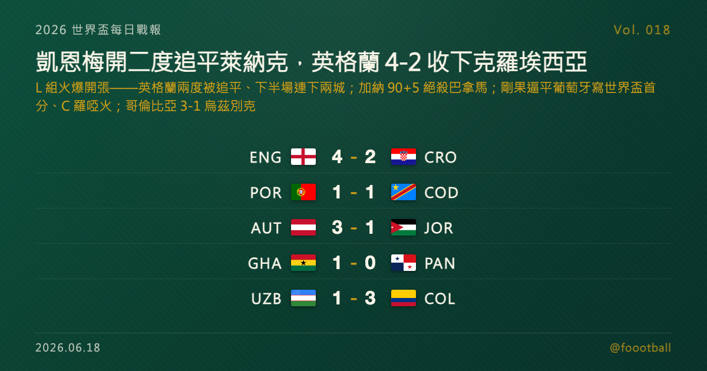

凱恩梅開二度追平萊納克紀錄、英格蘭 4-2 收下克羅埃西亞：世界盃 L 組火爆開張
2026 世界盃 J、K、L 三組首輪同日收官：英格蘭與克羅埃西亞踢出六球大戰，凱恩梅開二度、追平萊納克保持的英格蘭世界盃 10 球紀錄，貝林漢與拉舒福特下半場再進兩球，英格蘭頂住兩度被扳平、4-2 拿下開門紅；剛果民主共和國頭槌逼平葡萄牙，寫下自 1974 年（薩伊時期）以來的世界盃隊史首顆進球與首分、C 羅整場啞火；加納第 90+5 分鐘絕殺巴拿馬；哥倫比亞 3-1 收下世界盃首秀的烏茲別克。

2026 世界盃每日戰報 Vol. 018｜C 小組賽｜J／K／L 組首輪賽果
§1 即時比分戰報
2026 世界盃小組賽推進到 J、K、L 三組首輪，五場同日打完，焦點落在達拉斯近郊的阿靈頓。英格蘭與克羅埃西亞踢出一場六球大戰：隊長凱恩（Harry Kane）上半場梅開二度，追平萊納克（Gary Lineker）保持的英格蘭球員世界盃最多進球紀錄（10 球）；克羅埃西亞兩度將比分扳平、半場戰成 2-2，但貝林漢（Jude Bellingham）下半場開賽兩分鐘隨即破門、替補登場的拉舒福特（Marcus Rashford）終場前再添一城，英格蘭 4-2 拿下開門紅。另一邊，剛果民主共和國靠維薩（Yoane Wissa）的頭槌逼平葡萄牙，寫下自 1974 年以「薩伊」之名首度參賽以來、隊史在世界盃正賽的第一顆進球與第一分，C 羅（Cristiano Ronaldo）整場未能破門；加納在第 90+5 分鐘絕殺巴拿馬；哥倫比亞靠迪亞茲（Luis Díaz）一傳一射 3-1 收下世界盃首秀的烏茲別克；奧地利則 3-1 擊敗約旦，奪下睽違 36 年的世界盃勝利。以下是五場賽果：
| 賽事 | 比分 | 場館 | 焦點 |
|---|---|---|---|
| 🏴 英格蘭 — 🇭🇷 克羅埃西亞 | 4 - 2 | 阿靈頓 AT&T Stadium | 凱恩梅開二度（12'P、42'）追平萊納克英格蘭世界盃 10 球紀錄；貝林漢 47'、拉舒福特 85' 下半場再下兩城；克羅埃西亞由 Baturina 36'、Musa 45+5' 兩度扳平 |
| 🇵🇹 葡萄牙 — 🇨🇩 民主剛果 | 1 - 1 | 休士頓 NRG Stadium | João Neves 6' 頭槌先開紀錄；維薩（Wissa）半場補時頭槌扳平、寫下剛果自 1974「薩伊」時期以來的世界盃首球與首分；C 羅整場未破門 |
| 🇺🇿 烏茲別克 — 🇨🇴 哥倫比亞 | 1 - 3 | 墨西哥城 Estadio Azteca | 迪亞茲（Díaz）一傳一射；穆尼奧斯 40' 先拔頭籌、坎帕斯終場前再添一城；烏茲別克由 Fayzullaev 攻入隊史世界盃首球 |
| 🇬🇭 加納 — 🇵🇦 巴拿馬 | 1 - 0 | 多倫多 BMO Field | 伊倫基（Yirenkyi）第 90+5 分鐘接托馬斯-阿桑特傳中絕殺；加納搶下關鍵三分 |
| 🇦🇹 奧地利 — 🇯🇴 約旦 | 3 - 1 | 聖塔克拉拉 Levi's Stadium | 施密德 20' 遠射、奧爾萬（Olwan）50' 為約旦寫下隊史世界盃首球、76' 烏龍、阿瑙托維奇補時點球封勝；奧地利睽違 36 年再嘗世界盃勝績 |
五場分屬 J、K、L 三組，三組的首輪到此全部打完。J 組由前一日先發的衛冕冠軍阿根廷與本日的奧地利雙雙取勝；K、L 兩組則是本屆才登場的新戰線。§2 是三組目前的形勢。
§2 排行榜區：J／K／L 組首輪形勢
J 組（首輪打完）——阿根廷（前一日 3-0 阿爾及利亞）與奧地利各取一勝、同積 3 分，靠淨勝球分出暫時先後；約旦與阿爾及利亞先吞一敗：
| # | 球隊 | 賽 | 勝 | 和 | 負 | 進 | 失 | 差 | 分 |
|---|---|---|---|---|---|---|---|---|---|
| 1 | 🇦🇷 阿根廷 | 1 | 1 | 0 | 0 | 3 | 0 | +3 | 3 |
| 2 | 🇦🇹 奧地利 | 1 | 1 | 0 | 0 | 3 | 1 | +2 | 3 |
| 3 | 🇯🇴 約旦 | 1 | 0 | 0 | 1 | 1 | 3 | -2 | 0 |
| 4 | 🇩🇿 阿爾及利亞 | 1 | 0 | 0 | 1 | 0 | 3 | -3 | 0 |
K 組（首輪打完）——哥倫比亞以一場 3-1 領跑；葡萄牙與剛果民主共和國 1-1 戰平、積分淨勝球進球完全相同，暫時並列；烏茲別克先吞一敗：
| # | 球隊 | 賽 | 勝 | 和 | 負 | 進 | 失 | 差 | 分 |
|---|---|---|---|---|---|---|---|---|---|
| 1 | 🇨🇴 哥倫比亞 | 1 | 1 | 0 | 0 | 3 | 1 | +2 | 3 |
| 2 | 🇵🇹 葡萄牙 | 1 | 0 | 1 | 0 | 1 | 1 | 0 | 1 |
| 2 | 🇨🇩 民主剛果 | 1 | 0 | 1 | 0 | 1 | 1 | 0 | 1 |
| 4 | 🇺🇿 烏茲別克 | 1 | 0 | 0 | 1 | 1 | 3 | -2 | 0 |
L 組（首輪打完）——英格蘭與加納各取一勝、同積 3 分，英格蘭靠淨勝球居首；克羅埃西亞與巴拿馬先輸一場：
| # | 球隊 | 賽 | 勝 | 和 | 負 | 進 | 失 | 差 | 分 |
|---|---|---|---|---|---|---|---|---|---|
| 1 | 🏴 英格蘭 | 1 | 1 | 0 | 0 | 4 | 2 | +2 | 3 |
| 2 | 🇬🇭 加納 | 1 | 1 | 0 | 0 | 1 | 0 | +1 | 3 |
| 3 | 🇵🇦 巴拿馬 | 1 | 0 | 0 | 1 | 0 | 1 | -1 | 0 |
| 4 | 🇭🇷 克羅埃西亞 | 1 | 0 | 0 | 1 | 2 | 4 | -2 | 0 |
別忘了本屆晉級規則：12 個小組、每組前兩名加上 8 個最佳第三名，共 32 隊晉級淘汰賽。對首戰全取三分的阿根廷、奧地利、哥倫比亞、英格蘭、加納來說，這是理想的開局；而先吞一敗的約旦、阿爾及利亞、烏茲別克、巴拿馬與克羅埃西亞，小組賽還有兩輪，仍有調整與反撲的空間——尤其是 2018 亞軍克羅埃西亞，一場失利遠不到下結論的時候。
§3 賽事摘要
- 英格蘭 4-2 克羅埃西亞：本日最受矚目的一戰，也是一場高潮迭起的六球大戰。凱恩先在第 12 分鐘主罰點球破門，第 42 分鐘再下一城完成梅開二度——這兩球讓他的英格蘭世界盃生涯進球數來到 10 球，追平萊納克（Gary Lineker）保持的英格蘭球員世界盃最多進球紀錄；他同時成為繼貝克漢之後、史上第二位在三屆不同世界盃都有進球的英格蘭球員（據 Opta 統計）。克羅埃西亞並未被輕易拉開：Baturina 在第 36 分鐘以一記遠射、Musa 在上半場補時（45+5）的凌空抽射兩度將比分扳平，半場戰成 2-2。真正的分水嶺在下半場——貝林漢開賽兩分鐘（47'）殺入禁區射進遠角，替補上場的拉舒福特（Marcus Rashford）在第 85 分鐘與薩卡（Saka）做球後再入一球，英格蘭連下兩城、4-2 收下開門紅。需要說明的是，英格蘭全場其實未曾落後，是兩度領先被追平後在下半場拉開，而非從落後中逆轉。
- 葡萄牙 1-1 剛果民主共和國：奪冠熱門葡萄牙踢得並不順。年僅 21 歲的 João Neves 在第 6 分鐘頭槌破門、為葡萄牙先開紀錄，但剛果民主共和國靠維薩（Yoane Wissa）在上半場補時的一記頭槌扳平，最終 1-1 逼平葡萄牙。這顆進球意義非凡——這是剛果民主共和國（1974 年曾以「薩伊」之名首度參賽）隊史在世界盃正賽的第一顆進球，也讓他們拿到隊史世界盃的第一分。葡萄牙下半場控球佔優卻未能再進球，隊長 C 羅整場未能破門。對葡萄牙而言這是個略顯意外的開局，但小組賽長路漫漫；對剛果民主共和國來說，能在強敵身上寫下隊史第一分，是極具份量的一夜。
- 烏茲別克 1-3 哥倫比亞：K 組另一場，主角是迪亞茲（Luis Díaz）。哥倫比亞由穆尼奧斯（Daniel Muñoz）在第 40 分鐘接迪亞茲傳球先拔頭籌，迪亞茲本人下半場再親自破門、隨後替補坎帕斯（Campaz）終場前錦上添花，迪亞茲一傳一射成為全場焦點。世界盃首秀的烏茲別克並非毫無亮點——Fayzullaev 把握對方失誤攻入球門，為球隊寫下隊史世界盃的第一顆進球，是這個夜晚屬於他們的紀念時刻。
- 加納 1-0 巴拿馬：L 組一場膠著的低比分對決，懸念一直留到最後一刻。雙方鏖戰至補時，伊倫基（Caleb Yirenkyi）在第 90+5 分鐘接托馬斯-阿桑特（Brandon Thomas-Asante）的傳中破門絕殺，加納 1-0 帶走關鍵三分。這是兩隊的世界盃首戰，加納用一記讀秒進球搶下寶貴的開門紅。
- 奧地利 3-1 約旦：奧地利由施密德（Romano Schmid）在第 20 分鐘以一記遠射首開紀錄。世界盃首登大舞台的約旦頑強回應——奧爾萬（Ali Olwan）在第 50 分鐘內切後抽射破門，為約旦寫下隊史世界盃的第一顆進球。奧地利隨後靠一記烏龍球重新領先，並由老將阿瑙托維奇（Marko Arnautović）在補時主罰點球鎖定勝局，終場 3-1。這是奧地利睽違 36 年再嘗世界盃勝績；約旦雖在首秀吞敗，但能在強敵身上踢進隊史第一球，已是值得帶走的收穫。
§4 焦點觀察｜六球大戰背後：凱恩的 10 球，與三組首輪的戲劇性
世界盃小組賽的第一場，常常不只是三分的問題，而是一支球隊把自己擺在什麼高度的宣告。英格蘭與克羅埃西亞的這場六球大戰，給了好幾個值得記住的理由。
凱恩：兩顆進球，追平一項擺了三十多年的紀錄。 上半場結束前，凱恩已經梅開二度——第 12 分鐘的點球、第 42 分鐘的運動戰進球。這兩球把他的英格蘭世界盃生涯進球數推到 10 球，追平了萊納克（Gary Lineker）保持的英格蘭球員世界盃最多進球紀錄。萊納克的 10 球，是 1986 年墨西哥世界盃（6 球，當屆金靴）與 1990 年義大利世界盃（4 球）累積下來的；凱恩則用 2018、2022、2026 三屆的累積走到同一個數字，據 Opta 統計，他也因此成為繼貝克漢之後、史上第二位在三屆不同世界盃都進球的英格蘭人。對一位生涯仍在進行中的隊長來說，「追平」往往只是「超越」的前一步。
這場比賽真正的考驗，其實是英格蘭怎麼從 2-2 走出來。 比起比分本身，更值得玩味的是過程。英格蘭兩度領先，又兩度被克羅埃西亞追平——Baturina 的遠射、Musa 在半場補時的凌空抽射，都讓這支 2018 世界盃亞軍展現了底蘊。半場 2-2，對手是經驗豐富的克羅埃西亞，這時候考驗的不是天賦，而是球隊在被反覆拉回原點後，能不能在下半場立刻重新拿回主動。貝林漢開賽兩分鐘的進球給了答案，而板凳上的薩卡與拉舒福特在第 85 分鐘聯手鎖定勝局，則說明了這支英格蘭的深度。值得一提的是，全場其實英格蘭未曾落後——這是一場頂住反撲、再拉開差距的勝利，而非從落後中翻盤。
而這一夜的戲劇性，並不只屬於英格蘭。 在休士頓，剛果民主共和國用維薩的一記頭槌逼平了葡萄牙，寫下這個國家在世界盃正賽的第一顆進球與第一分——距離他們 1974 年以「薩伊」之名首度參賽，已經過了 52 年；同一場比賽，奪冠熱門葡萄牙與隊長 C 羅吞下一個略顯意外的平局。在多倫多，加納與巴拿馬鏖戰到第 90+5 分鐘，才靠伊倫基的讀秒進球分出勝負。小組賽首輪的迷人之處正在這裡：有人追平紀錄，有人寫下歷史的第一筆，也有人把懸念留到最後一秒——而這一切，都還只是漫長賽程的第一步。
§5 台北時間明晨看點
J、K、L 三組首輪收官後，台北時間明晨起，賽程將回到 A、B 兩組的第二輪，兩支地主球隊接連登場：墨西哥對南韓、加拿大對卡達；此外捷克對南非、瑞士對波士尼亞與赫塞哥維納等小組賽也將陸續開踢。兩支地主能否在第二輪延續聲勢、展現狀態與企圖心，是明晨最值得觀察的主線。明晨的最新賽果與形勢，Vol. 019 接著報。
常見問題
Q：凱恩追平的是什麼紀錄？ A：凱恩這場對克羅埃西亞梅開二度，讓他的英格蘭世界盃生涯進球數達到 10 球，追平萊納克（Gary Lineker）保持的「英格蘭球員世界盃最多進球」紀錄。萊納克的 10 球來自 1986 年（6 球）與 1990 年（4 球）兩屆世界盃。據 Opta 統計，凱恩同時成為繼貝克漢之後、史上第二位在三屆不同世界盃（2018、2022、2026）都有進球的英格蘭球員。
Q：剛果民主共和國這顆進球為什麼是歷史性的？ A：剛果民主共和國曾在 1974 年以「薩伊」之名首度參加世界盃，但此前從未在世界盃正賽進球、也從未拿到積分。維薩（Yoane Wissa）對葡萄牙的這記頭槌，是這個國家隊史在世界盃的第一顆進球，1-1 的結果也讓他們收下隊史世界盃的第一分——距離首度參賽已過了 52 年。
Q：英格蘭 4-2 這場是逆轉勝嗎？ A：嚴格來說不是。英格蘭全場未曾落後，是兩度領先後被克羅埃西亞追平（1-1、2-2），半場戰成 2-2；下半場英格蘭再進兩球（貝林漢、拉舒福特）拉開比分。所以這是一場「頂住對手兩度扳平、再下兩城」的勝利，而不是從落後中翻盤的逆轉。
Tags: 世界盃, 2026世界盃, 凱恩, 英格蘭, 克羅埃西亞